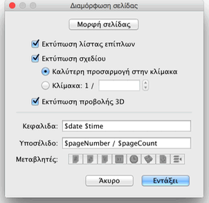
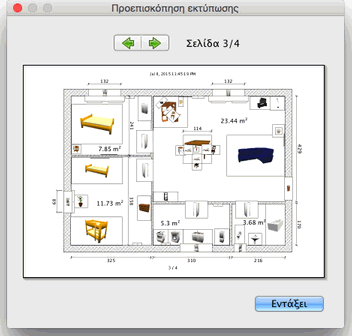

| Εκτύπωση οικίας | |||
Για εκτύπωση οικίας, επιλέξτε Αρχείο > Εκτύπωση.... Από προεπιλογή, το Sweet Home 3D εκτυπώνει τη λίστα επίπλων, το σχέδιο και την τρέχουσα προβολή 3D της οικίας χρησιμοποιώντας το προεπιλεγμένο μέγεθος χαρτιού, τα προεπιλεγμένα περιθώρια και προσανατολισμό.  Στον πίνακα διαμόρφωσης σελίδας μπορείτε να αλλάξετε το μέγεθος χαρτιού και τον προσανατολισμό κάνοντας κλικ στο κουμπί Μορφή σελίδας. Επίσης, μπορείτε να επιλέξετε αν θέλετε να εκτυπωθεί η λίστα επίπλων, το σχέδιο και η προβολή 3D της οικίας. Αν δεν θέλετε να χρησιμοποιήσετε την κλίμακα σχεδίου που υπολογίζεται αυτόματα για να προσαρμόζεται στη σελίδα κατά τον καλύτερο δυνατό τρόπο, μπορείτε να επιλέξετε άλλη κλίμακα στο πεδίο Κλίμακα.
Για να αποφύγετε την πληκτρολόγηση του ακριβούς ονόματος της μεταβλητής, χρησιμοποιήστε τα κουμπιά Μεταβλητές που εμφανίζονται στα πεδία κειμένου Κεφαλίδα και Υποσέλιδο . Καθώς το σύμβολο $ διατηρείται για τις μεταβλητές, πρέπει να χρησιμοποιήσετε τον κωδικό $$ για να εκτυπώσετε το σύμβολο $. Πριν εκτυπώσετε την οικία σας μπορείτε να κάνετε προεπισκόπηση της διαμόρφωσης σελίδας σας στην οθόνη επιλέγοντας Αρχείο> Προεπισκόπηση εκτύπωσης... από το μενού.  Στον πίνακα προεπισκόπησης εκτύπωσης μπορείτε να δείτε πώς θα εκτυπωθεί η οικία σελίδα προς σελίδα. Για να αλλάξετε τη σελίδα προεπισκόπησης κάντε κλικ στα βέλη στο πάνω μέρος του πίνακα ή πατήστε τα πλήκτρα βέλους κατεύθυνσης. |
|